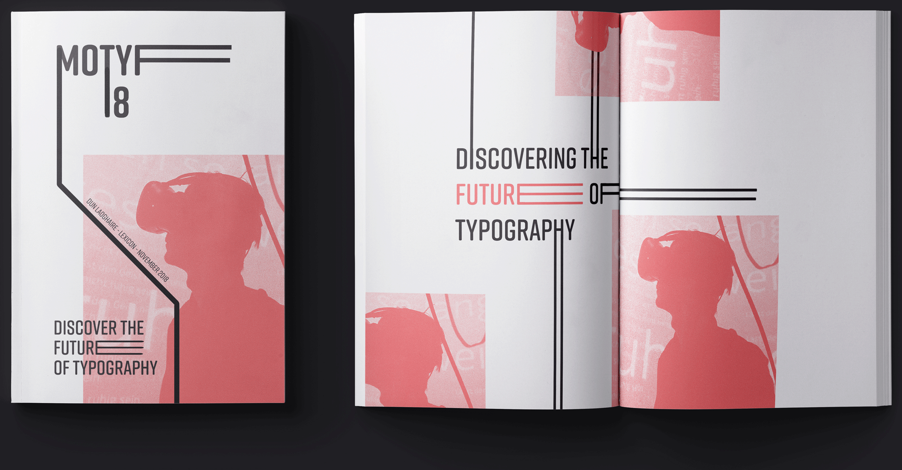

Motyf Fesitval
Branding project

Brief_
For this Project I was asked to propose an identity for Motyf Type fesitval Dublin 2018. As it was a typography festival it was important to keep everything type related. My hope was to make the typography exciting and make it more than just text on a page.
Response_
The main thing for me was to create type in motion, in order to break the preception that type is static. The festival itself is a way to connect with other typographers, so I decided to represent this through an extending line which drove my project.